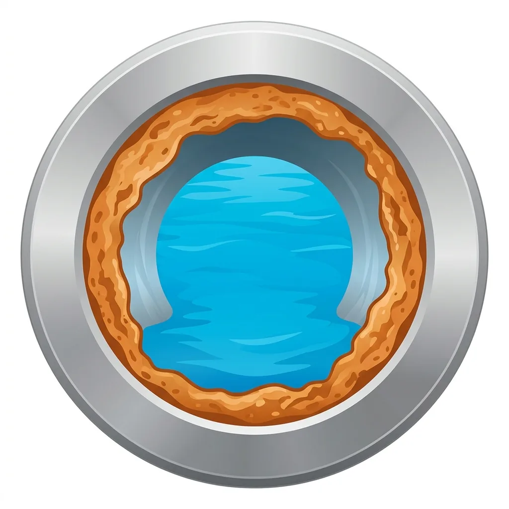

Det var lukten som fick Anders Lindström att reagera. Unken, lite sötaktig och tydligt avloppslik – trots att badrummet i en äldre lägenhet på Södermalm i Stockholm såg skinande rent ut. Kaklet blänkte och toaletten var precis nystädad.
Anders drog på sig handskarna och sågade loss en bit av avloppsröret. På arbetsbänken låg ett ungefär 20 centimeter långt rör, täckt på insidan av en tjock, svartbrun beläggning. Halt och klibbigt, nästan som våt tjära.
”Det här kommer från en helt vanlig familjetoalett”, berättar Anders och håller upp röret. ”Fyra personer i en trerummare. Liknande beläggningar kan finnas i många svenska hem utan att någon märker det.”
Anders Lindström är VVS-montör i Stockholm och arbetar i ett familjeföretag i tredje generationen. Han har 28 års erfarenhet och har arbetat med över 15 000 toaletter. ”Det som ser rent ut på ytan och det som händer inne i rören är inte alltid samma sak”, säger han.
Det som gömmer sig i avloppet – även när toaletten ser ren ut
De flesta av oss använder toaletten varje dag och städar den regelbundet med toalettborste, WC-rengöring och kanske ett rengöringsblock under kanten. Sedan tänker vi att det är klart.
Men vad händer bakom porslinet, där ingen ser? Inne i avloppsrören som leder bort vattnet?
Anders jämför det med beläggningar på tänderna: ”Att skölja med vatten räcker inte alltid för att få bort allt. På liknande sätt kan smuts fastna i rören – och där kommer man inte åt med en vanlig toalettborste.”
Det kallas biofilm: en beläggning av mikroorganismer och organiskt material som kan bildas på fuktiga ytor. Med tiden kan också fett, kalk och andra rester fastna. Vattnet rinner förbi, men en del av beläggningen kan bli kvar på rörväggarna.
Det är själva poängen: att skrubba toalettstolen innebär inte att man rengör insidan av avloppsrören. Porslinet kan glänsa samtidigt som avlagringar finns längre ned.

”Jag brukar säga till kunderna att man lätt glömmer det man inte ser. Toaletten kan se ren ut samtidigt som rören behöver ses över.”
– Anders Lindström, VVS-montör i Stockholm
Fyra steg mot ett stopp i avloppet – de två första märks knappt
Under sina 28 år i branschen har Anders sett samma förlopp många gånger. Ett stopp uppstår ofta gradvis, långt innan vattnet slutar rinna undan.



Varför vanliga rengöringsmedel inte alltid räcker
Anders har provat många olika metoder. Enligt honom når vanliga produkter inte alltid beläggningar längre in i rören.

WC-rengöring som WC-Anka och Domestos: Rengör framför allt porslinet. Vätskan rinner vidare och får inte alltid tillräcklig kontakttid med avlagringar på rörväggarna.
Kemiska propplösare, till exempel Mr Muscle: Kan lösa vissa typer av stopp, men måste användas enligt anvisningarna. Fel användning kan vara riskabel och vissa rörmaterial är känsliga.
Vaskrensare: Kan få loss ett stopp med tryck, men tar inte nödvändigtvis bort beläggningar längre in i röret.
Rensspiral: Kan öppna en passage genom ett stopp så att vattnet rinner igen. Rester kan ändå sitta kvar längs rörväggarna.
Akut rörmokare (cirka 1 700–3 400 kr): En fackman kan behöva rensa eller högtrycksspola. Priset varierar beroende på ort, tid och arbetets omfattning.
Upptäckten som först gjorde Anders skeptisk
Våren 2024 träffade Anders en kollega från Rotterdam på Nordbygg i Stockholm. Kollegan berättade om ett rengöringspulver från Nederländerna som bildar skum och är tänkt att nå beläggningar inne i avloppsrören.
Anders var tveksam. Under sina 28 år hade han sett gott om produkter som lovade mer än de höll.
Men kollegan visade en film: ett mörkt rör, pulver som tillsattes och sedan vatten. Skummet steg. Efter ungefär 30 minuter såg insidan betydligt renare ut.
”Jag såg filmen tre gånger”, berättar Anders. ”Sedan beställde jag hem en förpackning för att testa själv.”
Produkten heter Fuugu.
Så fungerar Fuugus skumbaserade rengöring
En nackdel med flytande rengöringsmedel är att de snabbt rinner nedåt med tyngdkraften. De kommer därför inte alltid i kontakt med hela rörets insida, medan beläggningar kan finnas runt hela rörväggen.
Fuugu bygger på en annan princip: skum.
Pulvret tillsätts i toaletten och aktiveras med vatten enligt tillverkarens anvisningar. Då bildas skum som breder ut sig och kan komma i kontakt med fler ytor än en snabbt förbipasserande vätska.
Så här är den skumbaserade rengöringen tänkt att fungera:
Steg 1: Skummet sprider sig och kommer i kontakt med smuts och beläggningar.
Steg 2: Rengöringsingredienserna får verka mot organiska rester under rekommenderad tid.
Steg 3: Därefter spolar man enligt anvisningarna för att skölja bort lösgjorda rester.

”När jag testade Fuugu i ett gammalt rör såg jag hur skummet nådde smutsen på insidan. Efter en halvtimme såg röret ljusare ut.”
– Anders Lindström
Det många missar: mikroorganismer och beläggningar i avloppet
Det handlar inte bara om stopp. Fuktiga avloppsmiljöer kan innehålla mikroorganismer och en ren toalettstol betyder inte att alla delar av avloppet är fria från beläggningar.
Forskare vid University of Colorado har visat att spolning kan bilda en ”toalettplym” med små droppar som i ett experiment nådde omkring 1,8 meter upp i luften. Det understryker vikten av god toaletthygien.
Dropparna kan landa på handdukar, tandborstar och andra ytor i badrummet. Därför är regelbunden städning och god hygien viktigt.
Att hålla avloppet rent kan ingå i det vanliga underhållet. Fuugu är avsett för rengöring av beläggningar, men ersätter inte hygienrutiner eller professionell hjälp vid allvarliga stopp.

Det här berättar användare efter att ha provat Fuugu
”Vattnet i vår toalett hade runnit undan långsamt i ett halvår och det kluckade på nätterna. Vi hade fått ett prisförslag på 2 700 kr för rensning. Jag testade Fuugu, lät skummet verka i 30 minuter och spolade. Vattnet rann bättre efteråt. Skönt att kunna prova något själv först.”
”Jag är 74 år och bor själv. Förr behövde jag ringa rörmokaren ungefär två gånger om året, och det kostade runt 2 000 kr varje gång. Mitt barnbarn gav mig Fuugu i julklapp. Jag var skeptisk, men provade. Nu har det gått åtta månader utan att jag behövt boka något nytt besök. Barnbarnet får extra mycket julmat i år!”
”Jag hade redan provat propplösare, vaskrensare och till och med en rensspiral från byggvaruhuset. Jag trodde inte att ännu en produkt skulle göra skillnad, men Fuugu var enkel att använda. Nu har vattnet runnit undan som det ska i fyra månader.”
”Vi har en tvååring hemma som vill undersöka allt i badrummet. Därför är vi extra noga med städningen. Jag använder Fuugu enligt anvisningarna och fortsätter förstås med våra vanliga hygienrutiner. Det är smidigt att ha hemma.”
”En lördagskväll vid tiotiden blev det stopp i toaletten när vi hade gäster. Akutbesöket kostade 3 200 kr. Efteråt beställde min son Fuugu och tipsade om att använda det som en del av underhållet. Hittills har vi inte haft något nytt stopp.”

Fuugu kan användas där avlopp riskerar att sättas igen
Produkten är främst avsedd för toaletten. Andra användningsområden kan vara aktuella om de uttryckligen stöds av tillverkarens anvisningar:
Toalett: Beläggningar och dålig lukt i avloppet.
Handfat: Hår, tvålrester och tandkrämsrester.
Dusch och badkar: Hår, schamporester och avlagringar.
Diskho: Fett och matrester i avloppet.
Tvättmaskin: Ludd och tvättmedelsrester i avloppsanslutningen – kontrollera först att produkten är lämplig.
En produkt för flera av hemmets avlopp, förutsatt att den är godkänd för respektive användningsområde.
Var hittar man originalet? (Se upp för kopior)
Fuugu säljs via tillverkarens officiella webbshop. Kontrollera alltid att du handlar från rätt säljare och läs aktuella villkor.
Anders rekommenderar att man granskar okända återförsäljare: ”Liknande förpackningar behöver inte innehålla samma sak. Kontrollera produktens ursprung och innehåll.”
Genom direktförsäljning kan tillverkaren erbjuda egna kampanjpriser. Aktuellt pris, leveransvillkor, ångerrätt och eventuell garanti framgår av webbshoppen.
JUST NU: Upp till 70 % rabatt – så länge erbjudandet gäller
Tillverkaren annonserar för närvarande en kampanj med upp till 70 % rabatt på Fuugu. Kontrollera aktuellt pris och lagerstatus i den officiella webbshoppen.
Se om Fuugu går att beställa till din adress i Sverige: